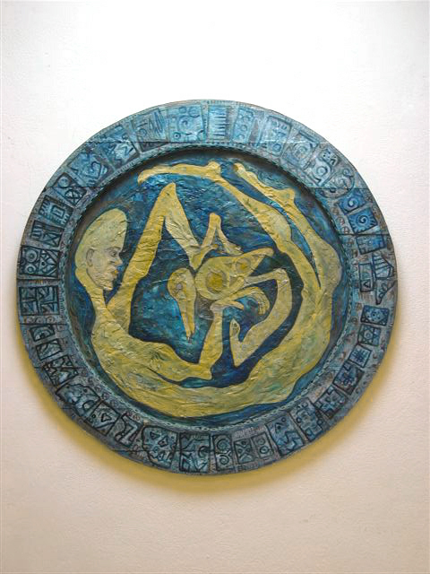

VOLUME 4, NUMBER 1 / SRPING-SUMMER 2006
Home
About Calabash
Current Issue
Past Issue & Archive
Submissions & Guidelines
Contributors Index
Corrections
Call for Submission
ISSN 1531-6661
FROM THE EDITOR
"And the Excitement Continues..."
by Dolace McLean
NON-FICTION
An Interview with Lorna Goodison
by Michela A. Calderaro
East Indians/South Asians in the Caribbean
by Dr. Kumar Mahabir
FICTION
My Father and the Confederate Soldier
by Zee Edgell
See How They Run
by Cyril Dabydeen
Shreds
Amsterdam
by Ellen Ombre
Missive From A California Haitian Living With A Frenchman
by Carine Fabius

Porthole
- by Anna Ruth Henriques
Click here to view the Calabash Gallery of Art
VISUAL ARTS
Visual Journeys: The Art of Anna Ruth Henriques
by Diana Cooper-Clark
Marie-Therese Dupoux: Marithou
by Gérald Alexis
Osaira Muyale: Self, Memory and Exile
by Elvine Topac
Self-Portrait of the Artist Speaking in the Third Person
by Kit-Ling Tjon Pian Gi
POETRY
Foremothers
Motherlines Or Breast Feeding the Diaspora
by Deborah Jack
Brown
by Laila Haidarali
Waiting for Grace
by Sandra Del Valle
Bas' Panday, Coolie Prime Minister
Mystic Lover
by A. Neil Deo
Small Bodigos
Fish and Bread
by Jorge David Capiello-Ortiz
Peanut Man
Teacher Girl
Church Song
by Stephen Narain
Summer Nights
Reverence
by Sassy Ross
BOOK REVIEW
Exotic Beaches/Erotic Bodies: A Review of Oonya Kempadoo's Tide Running
by Tiphanie Yanique Galiber